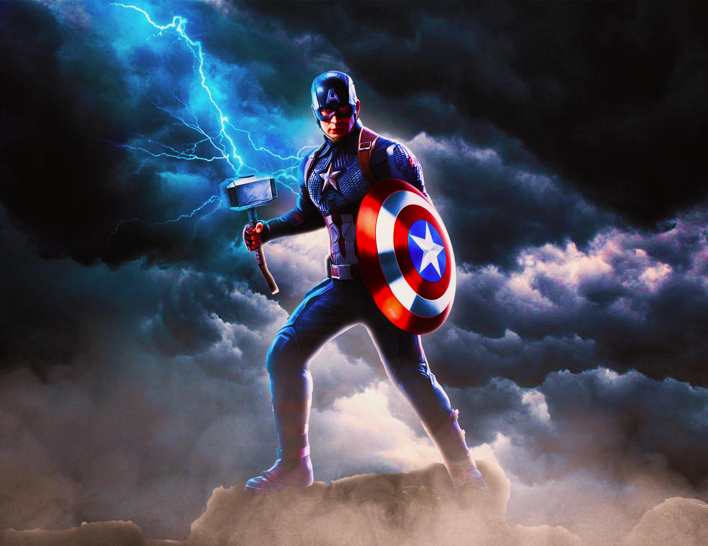

Brief History About Marvel Superheroes
The precursor to Marvel Comics was founded in 1939 by pulp magazine
publisher Martin Goodman. In order to capitalize on the growing
popularity of comic books—especially those starring
superheroes—Goodman created Timely Comics. Timely's first comic book
was Marvel Comics no. 1 (cover dated October 1939), which featured
several superhero characters, most notably the Human Torch and the
Sub-Mariner. Timely Comics introduced many superhero characters during
comics' “Golden Age” in the 1940s, most importantly Captain America,
who first appeared in Captain America Comics no. 1 (March 1941).
Learn more
My Favorite Superhero
 I have been into superheroes ever since I was a kid. Whether that be
from playing with action figures or pretending to be a superhero. I've
watched countless shows, movies, and cartoons. I've also played
superhero video games. Many heroes have caught my attention and were
my favorite at one point in time. There are a few superheros that I
would consider my favorite, but if I had to choose one, it would be
Spider-Man! To me, he is amazing (no pun intended)! He has the
characteristics of being funny, intelligent, grounded, and strong. He
has really cool abilities and is fun to watch or play Spider-Man
games.
I have been into superheroes ever since I was a kid. Whether that be
from playing with action figures or pretending to be a superhero. I've
watched countless shows, movies, and cartoons. I've also played
superhero video games. Many heroes have caught my attention and were
my favorite at one point in time. There are a few superheros that I
would consider my favorite, but if I had to choose one, it would be
Spider-Man! To me, he is amazing (no pun intended)! He has the
characteristics of being funny, intelligent, grounded, and strong. He
has really cool abilities and is fun to watch or play Spider-Man
games.
Next Favorite Hero
Who is it?
An unyielding hero whose character is his greatest strength, marked
by unwavering integrity, honesty, loyalty, and a strong moral
compass. Though physically powerful, his core identity comes from
his purity of spirit and selfless desire to do what is right.(Click
the triangle to reveal the hero)
 Captain America
Marvel Comic Book Eras
- The Golden Age(1939-1956)
- The Silver Age(1961-1970)
- The Bronze Age(1970-1984)
- The Modern Age Begins(1984-1997)
- Heroes Relaunched(1997-2004)
- Marvel Disassembled(2004-2012)
- Marvel NOW!(2012-2015)
- All-New All-Different Marvel(2015-2018)
- fresh Start(2018-2021)
- Timeless(2021-Current)
MCU timeline In Chronological Order
The Infinity Saga: Phase One (2008-2012)
- Iron Man (May 2, 2008)
- The Incredible Hulk (June 13, 2008)
- Iron Man 2 (May 7, 2010)
- Thor (May 6, 2011)
- Captain America: The First Avenger (July 22, 2011)
- Marvel's The First Avengers (May 4, 2012)
Phase Two (2013-2015)
- Iron Man 3 (May 3, 2013)
- Thor: The Dark World (November 8, 2013)
- Captain America: The Winter Soldier (April 4, 2014)
- Guardians of the Galaxy (August 1, 2014)
- Avengers: Age of Ultron (May 1, 2015)
- Ant-Man (July 17, 2015)
Phase Three (2016-2019)
- Captain America: Civil War (May 6, 2016)
- Doctor Strange (November 4, 2016)
- Guardians of the Galaxy Vol. 2 (May 5, 2017)
- Spider-Man: Homecoming (July 7, 2017)
- Thor: Ragnarok (November 3, 2017)
- Black Panther (February 16, 2018)
- Avengers: Infinity War (April 27, 2018)
- Ant-Man and the Wasp (July 6, 2018)
- Captain Marvel (March 8, 2019)
- Avengers: Endgame (April 26, 2019)
- Spider-Man: Far From Home (July 2, 2019)
The Multiverse Saga: Phase Four (2021-2022)
- Black Widow (July 9, 2021)
- Shang-Chi and the Legend of the Ten Rings (September 3, 2021)
- Eternals (November 5, 2021)
- Spider-Man: No Way Home (December 17, 2021)
- Doctor Strange in the Multiverse of Madness (May 6, 2022)
- Thor: Love and Thunder (July 8, 2022)
- Black Panther: Wakanda Forever (November 11, 2022)
Phase Five (2023-2024)
- Ant-Man and the Wasp: Quantumania (February 17, 2023)
- Guardians of the Galaxy Vol. 3 (May 5, 2023)
- The Marvels (November 11, 2023)
- Deadpool & Wolverine (July 26, 2024)
- Captain America: Brave New World (February 14, 2025)
- Thunderbolts (May 2, 2025)
Phase Six (2025-2027)
- The Fantastic Four: First Steps (July 25, 2025)
- Avengers: Doomsday (December 18, 2026)
- Avengers: Secret Wars (December 17, 2027)